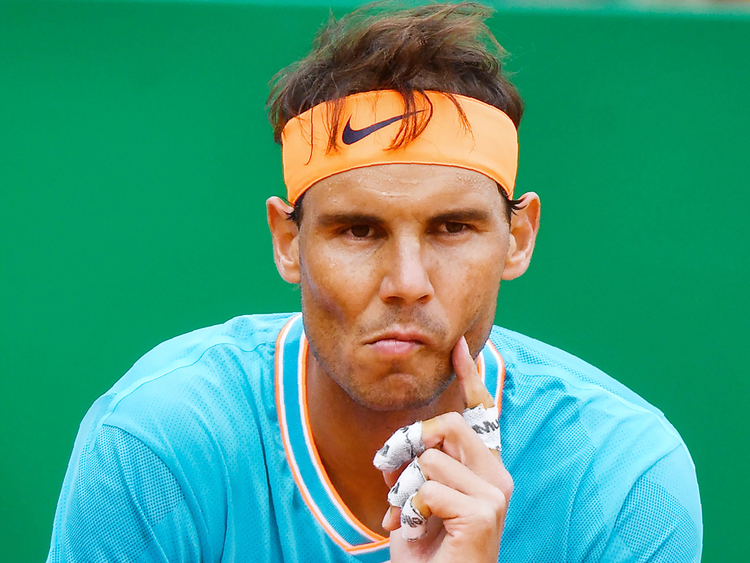

Home | How Tennis works | Stories | Statistics | FAQ and Contact Info
Roger Federer has Certainly Left a Legacy, Is it Time for him to retire? Here are some of his stats
Counties for the Girl's tennis team may be happening soon. Make sure to Check back for any Updates!
The U.S. Open is done. Is Nadal the best?
